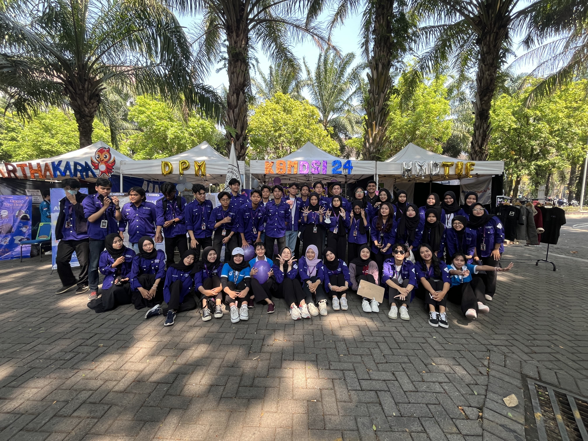
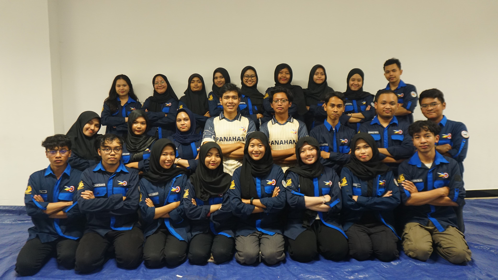

Halooo!!!
"tak kenal maka tak sayang"
Nama saya Yusmita Alya Melanie, biasa dipanggil 'Alya' dengan Nim 235150601111027.
Saat ini saya adalah mahasiswa dari Universitas Brawijaya, tepatnya di Fakultas Ilmu Komputer, Program Studi Pendidikan Teknologi Informasi.
hobi???
Hobi saya cukup template yahh hehe,
Yaitu, nonton film / drakor, baca webtoon, mendengarkan musik.
KBMDSI
UAP UB
Unit Aktivitas Panahan UB
Hard skill?
Soft skill?